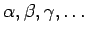
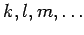
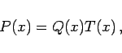
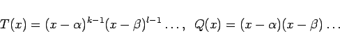
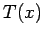

Inhalt Index DeskTop Bronstein

 Arithmetik Algebraische und transzendente Gleichungen Gleichungen n-ten Grades Allgemeine Eigenschaften der algebraischen Gleichungen
Arithmetik Algebraische und transzendente Gleichungen Gleichungen n-ten Grades Allgemeine Eigenschaften der algebraischen Gleichungen


Jede Gleichung n-ten Grades, deren Koeffizienten reelle oder komplexe Zahlen sind, besitzt n reelle oder komplexe Wurzeln, wobei die k-fachen Wurzeln k-mal gezählt werden. Wenn die Wurzeln von P(x) mit  bezeichnet werden und diese jeweils die Vielfachheiten  besitzen, dann gilt die Produktdarstellung
Die Lösung einer Gleichung P(x) = 0 kann stets durch Zurückführen auf eine Gleichung vereinfacht werden, die die gleichen Wurzeln wie die Ausgangsgleichung hat, aber jeweils nur noch mit der Vielfachheit 1. Dazu wird das Polynom in zwei Faktoren derart zerlegt, daß
|  | (1.166b) |
|  | (1.166c) |
gilt. Man kann T(x) als größten gemeinsamen Teiler der Polynome P(x) und dessen Ableitung P'(x) bestimmen, da die mehrfachen Wurzeln von P(x) auch Wurzeln von P'(x) sind. Das Polynom Q(x) erhält man dann durch Division von P(x) durch , und Q(x) hat dieselben Nullstellen wie  , aber mit der Vielfachheit 1.
, aber mit der Vielfachheit 1.